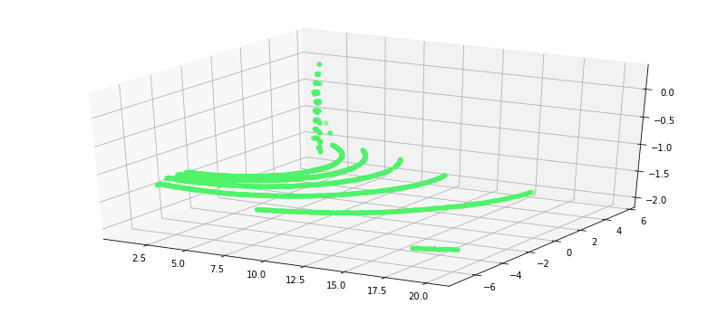

Conditional Filter
본 챕터에서는 RoI 추출 방법 중 하나인 Conditional Filter에 대하여 다루고 있습니다.
x,y,z값을 GT, GE, LT, LE, EQ.조건에 맞추어 제거 할수 있습니다.
자세한 내용은 Removing outliers using a Conditional or RadiusOutlier removal를 참고 하시면 됩니다.
PCL에서는 Conditional Filter를 Noise제거용으로 소개 하고 있지만, RoI추출에 좀더 유용한것 같아 RoI 추출 기법으로 분류 하였습니다.
%load_ext watermark
%watermark -d -v -p pcl,numpy
2018-11-23
CPython 3.5.2
IPython 6.4.0
pcl unknown
numpy 1.14.5
# -*- coding: utf-8 -*-
from __future__ import print_function
import pcl
import numpy as np
np.warnings.filterwarnings('ignore') #경고 메시지 출력 안함
import os
os.chdir("/workspace/3D_People_Detection_Tracking")
from include.visualization_helper import *
%matplotlib inline
do_conditional_outlier_filtering 정의
입력
- pcl_data : point cloud
- filter_axis : 제거할 축 (x or y or z)
- axis_min : 최소 크기
- axis_max : 최대 크기
출력
- point cloud
def do_conditional_outlier_filtering(pcl_data, axis,gt, lt):
'''
:param pcl_data: point could data subscriber
:axis :
:gt :
:lt :
:return: point cloud data
eg) do_conditional_outlier_filtering(cloud, 'x',1.0,20.0)
: https://github.com/hunjung-lim/3D_People_Detection_Tracking
'''
#axis_str = axis.str()
range_cond = pcl_data.make_ConditionAnd()
range_cond.add_Comparison2(axis, pcl.CythonCompareOp_Type.GT, gt)
range_cond.add_Comparison2(axis, pcl.CythonCompareOp_Type.LT, lt)
# build the filter
condrem = pcl_data.make_ConditionalRemoval(range_cond)
condrem.set_KeepOrganized(True)
return condrem.filter ()
PCD 파일 읽기
cloud = pcl.load("./sample/lobby.pcd") # Deprecated; use pcl.load instead.
print("Number of Points : {}".format(cloud.size))
if (cloud.size!=0):
visualization2D_xyz(cloud.to_array())
Number of Points : 19329
(x) : 92.2m
(y) : 87.5m
(z) : 10.3m

do_conditional_outlier_filtering 수행
axis = 'x'
gt = 1.0
lt = 20.0
cloud = do_conditional_outlier_filtering(cloud, axis,gt, lt)
print("Number of Points : {}".format(cloud.size))
if (cloud.size!=0):
visualization2D_xyz(cloud.to_array())
Number of Points : 19329
(x) : nanm
(y) : nanm
(z) : nanm

axis = 'y'
gt = -7.0
lt = 5.5
cloud = do_conditional_outlier_filtering(cloud, axis,gt, lt)
print("Number of Points : {}".format(cloud.size))
if (cloud.size!=0):
visualization2D_xyz(cloud.to_array())
Number of Points : 19329
(x) : nanm
(y) : nanm
(z) : nanm

print("Number of Points : {}".format(cloud.size))
if (cloud.size!=0):
visualization3D_xyz(cloud.to_array())
Number of Points : 19329
(x) : nanm
(y) : nanm
(z) : nanm

axis = 'z'
gt = -1.2
lt = 10.0
cloud = do_conditional_outlier_filtering(cloud, axis,gt, lt)
print("Number of Points : {}".format(cloud.size))
if (cloud.size!=0):
visualization3D_xyz(cloud.to_array())
Number of Points : 19329
(x) : nanm
(y) : nanm
(z) : nanm

Conditional 필터의 z축 필터링을 통해서 바닥제거도 가능합니다. 단, Lidar가 기울어져있으면 근거리와 원거리의 z값이 다르기 때문에 설치시 조심해야 합니다.